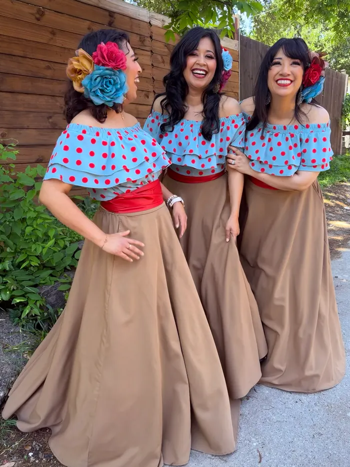

About us
We broke the mold.

Who we are
Rosas Divinas has broken the mold of traditional mariachi music. As the first and only all-female mariachi ensemble in the DFW Metroplex, and one of only a few nationwide, our journey began with a deep respect for the 19th-century Mexican heritage of the genre.
“We have performed at well over 2,000 events across DFW, from intimate weddings, baptisms, and quinceañeras to major festivals and shows.”
Director Tabitha Orta
Our music has taken us from backyard celebrations to stages in Los Angeles, Chicago and the Grand Cayman Islands, where we made history as the first mariachi group ever to perform there.
In late 2023, after nearly two decades together, we chose to focus on what moves us most: our specialty harmonies. Grammy winner P. Thelonious Orta, the youngest musician ever inducted into the Gospel Music Hall of Fame, has guided the group from behind the scenes since late 2006. He challenged us to think outside the box.
We moved from a standard mariachi lineup to a vocal-forward ensemble centered on intricate trio vocalizations. Clients looking for a traditional mariachi will still recognize the passion in our boleros, jarochos, polkas and cumbias, now with mesmerizing harmonies and an intimate, plugged-in ensemble feel.
The journey and our roots
Co-founded in 2004 by Joanna Martinez and Tabitha Sanchez Orta, Rosas Divinas came under Tabitha’s sole direction in late 2006 and shifted toward a dynamic “show group” feel. We’ve shared stages with Ozomatli, Fito Olivares and Graciela Beltran.
We hold a proud, long-standing tradition at the State Fair of Texas, on both the Bud Light Stage and the iconic Main Stage.